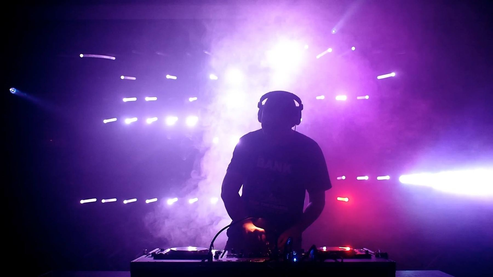
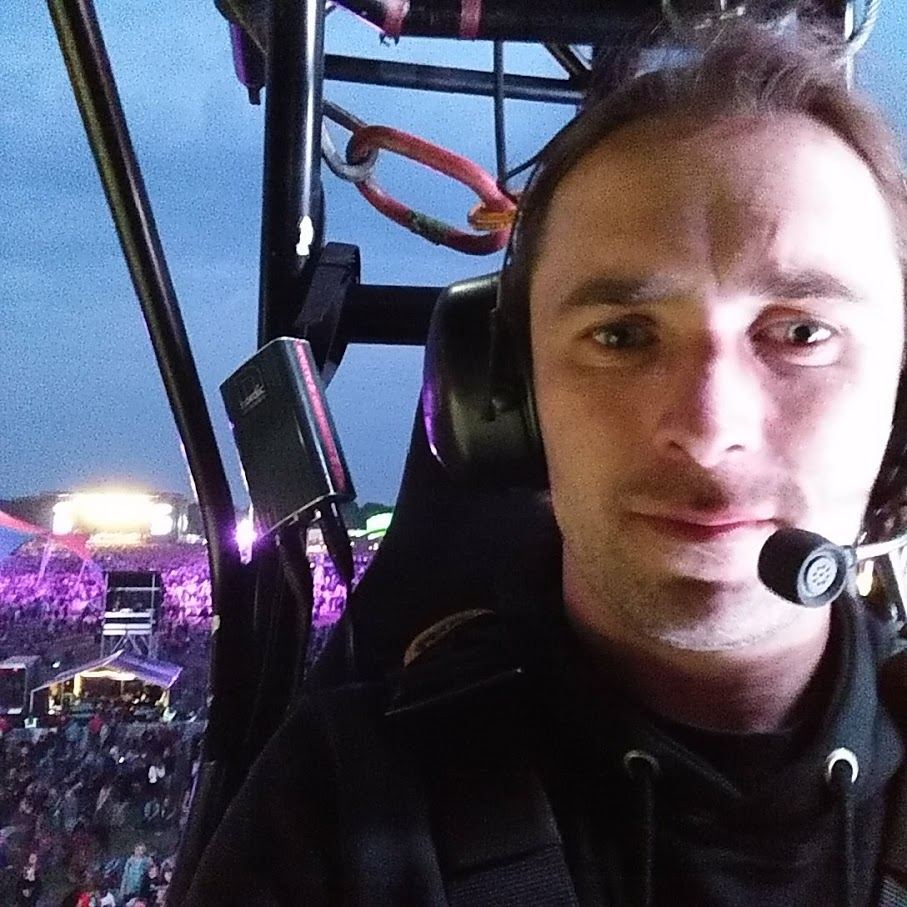

Ignition House · Odense
Lys i bevægelse.
Teknik i højden.
Jeg er Kenneth Danielsen. Jeg skaber oplevelser og steder, der flytter folk, både fysisk og mentalt. Jeg arbejder som lystekniker, med kinetisk lys og som rope access-tekniker, i Odense og ude i verden.
Arbejder løbende for
Udvalgte projekter
Initiativer og fællesskaber
Ud over opgaverne for andre har jeg været med til at starte og drive steder, fællesskaber og events i Odense.
Historik
Tidligere projekter og samarbejder.
Det kan jeg hjælpe med
Lysteknik
Rig, fokus, programmering og afvikling til teater, koncerter og events.
Kinetisk lys
Montage og drift af bevægelige lysinstallationer, hvor mekanik, lys og tid spiller sammen.
Rope access
IRATA-certificeret industriel rope access-tekniker. Sikkert arbejde i højden: rigning, montage og serviceopgaver, hvor lift og stillads ikke rækker.
Venue- og lysdesign
Koncept, venue og lys til klubaftener, festivaler og scenekunst, fra PHONO Festival til Odeology og DYNAMO.
VJ og projektionsmapping
Visuals, projektion og interaktive installationer til shows og udstillinger.
Produktion og projektledelse
Fra idé til afvikling: planlægning, teknik, hold og drift. Jeg har også undervist i multimediedesign på EAL (UCL).

Om mig
Jeg har arbejdet med events, scener og lys siden 2007 og har drevet Ignition House fra Odense siden 2013. Mit arbejde ligger der, hvor lys, teknik og højder mødes: den ene dag fokuserer jeg lamper på en teaterscene, den næste hænger jeg i tov på en facade eller servicerer en kinetisk lysinstallation.
Jeg kom ind i kinetisk lys som praktikant hos WHITEvoid i 2012 og har siden arbejdet på installationer og turnéer i Europa, USA og Asien, bl.a. ABBA Voyage i London, Hakkasan i Las Vegas og Bon Ivers USA-turnéer. Hjemme i Odense har jeg været med til at bygge PHONO Festival, DYNAMO, Odeology, Coworking Plus og Kulturklyngen op.
Jeg kan lide opgaver, der kræver både præcision og overblik, og hvor resultatet er noget, folk faktisk oplever.
- Base Odense, arbejder i hele landet og udlandet
- Firma Ignition House · CVR 34837538
- Sprog Dansk, engelsk
- Uddannelse Professionsbachelor i innovation og entrepreneurship og AP i IT-teknologi/elektronik, Erhvervsakademiet Lillebælt
- Certifikat IRATA industriel rope access
- Priser Den Fynske Kulturpris 2019 (DYNAMO) og 2012 (PHONO)
Lad os lave noget
Skal du bruge en lystekniker, en ekstra mand i højden eller én til at få en installation til at bevæge sig? Skriv til mig.